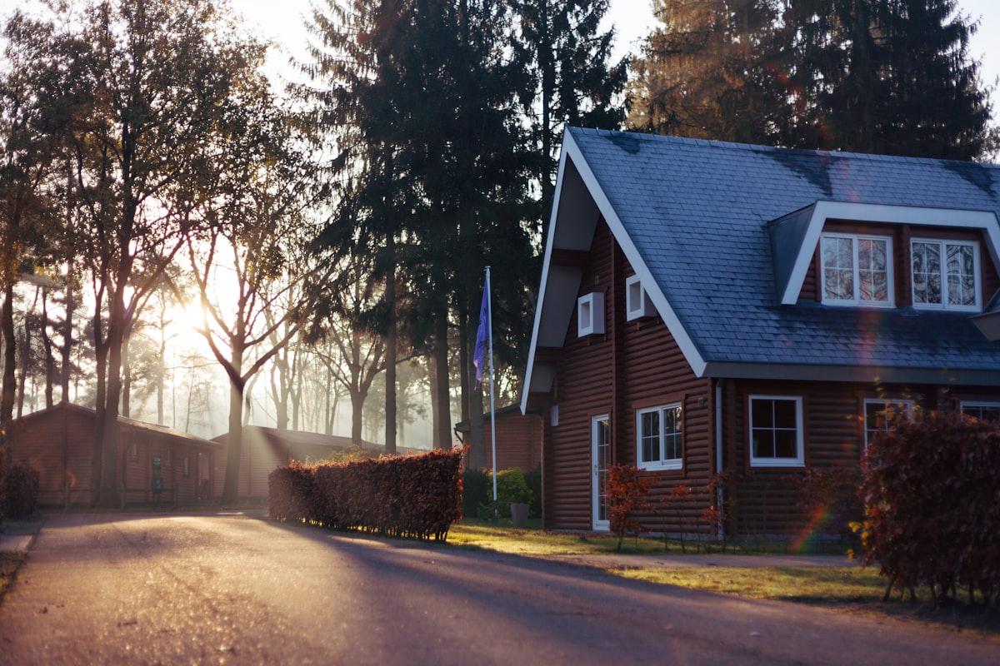

Discover Your Perfect Neighborhood
From coastal enclaves to hillside estates, each community offers its own unique character and lifestyle
Point Loma
Coastal elegance with panoramic bay views
Point Loma offers some of San Diego's most coveted waterfront properties. From the historic charm of the peninsula to the stunning cliffs of Sunset Cliffs, this community combines nautical heritage with modern luxury. Residents enjoy world-class yachting facilities, pristine beaches, and breathtaking views of the Pacific Ocean and San Diego Bay.
Local Landmarks
- Sunset Cliffs Natural Park
- Cabrillo National Monument
- Point Loma Yacht Club
- Shelter Island
- Waterfront estates and luxury condos
- Historic Craftsman and Spanish Colonial homes
- World-class yachting and boating
- Proximity to downtown San Diego
La Jolla
Where sophistication meets the Pacific
Known as the "Jewel" of San Diego, La Jolla represents the pinnacle of coastal luxury living. This prestigious community features dramatic oceanfront estates, world-renowned cultural institutions, and the legendary Torrey Pines Golf Course. From the Village's upscale boutiques to the secluded canyons of Muirlands, La Jolla offers an unparalleled lifestyle.
Local Landmarks
- La Jolla Cove & Children's Pool
- Torrey Pines Golf Course
- Museum of Contemporary Art
- Birch Aquarium
- Oceanfront estates and cliff-top properties
- Prestigious Muirlands and Country Club neighborhoods
- World-class dining and shopping
- Proximity to UC San Diego and Scripps Institution

Rancho Santa Fe
Timeless estates in a private paradise
The Covenant of Rancho Santa Fe is one of the most exclusive residential communities in the United States. This gated enclave features sprawling estates on multi-acre parcels, world-class equestrian facilities, and the legendary Rancho Santa Fe Golf Club. Privacy, security, and timeless elegance define this prestigious address.
Local Landmarks
- Rancho Santa Fe Golf Club
- The Inn at Rancho Santa Fe
- Osuna Ranch & Equestrian Center
- Del Mar Country Club
- Estate properties on 2+ acre minimum lots
- World-class equestrian facilities
- Private golf club and tennis facilities
- 24/7 security and gated access

Mission Hills
Historic charm with modern luxury
Mission Hills is one of San Diego's most architecturally significant neighborhoods, featuring stunning examples of Craftsman, Spanish Revival, and Prairie School homes. This historic district offers tree-lined streets, walkable access to boutiques and cafes, and stunning views of the bay and downtown skyline.
Local Landmarks
- Heritage Park Victorian Village
- Pioneer Park
- Fort Stockton
- University Heights Shopping District
- Historic homes with architectural significance
- Walkable neighborhood with local boutiques
- Parks and canyon trails nearby
- Close proximity to downtown San Diego
Fallbrook
Country estates and avocado groves
Known as the "Avocado Capital of the World," Fallbrook offers a rural retreat with sophisticated country living. This community features expansive ranch properties, equestrian estates, and a thriving arts scene. Residents enjoy a relaxed pace of life while remaining within reach of San Diego and Orange County.
Local Landmarks
- Grand Tradition Estate & Gardens
- Fallbrook Art Center
- Live Oak Park
- Avocado Festival (Annual)
- Ranch and equestrian properties
- Large acreage estates
- Thriving arts community
- Scenic rolling hills and groves

Poway
Family retreats in the countryside
Poway offers the perfect blend of suburban comfort and rural charm. Known as "The City in the Country," this community features excellent schools, expansive parks, and a variety of housing options from modern subdivisions to equestrian estates. The famous Poway Rodeo and weekly farmers market embody the community's family-friendly spirit.
Local Landmarks
- Lake Poway & Blue Sky Ecological Reserve
- Poway Center for the Performing Arts
- Poway Park & Old Poway Park
- Poway-Midland Railroad
- Top-rated schools and family amenities
- Equestrian properties and trails
- Expansive parks and outdoor recreation
- Strong sense of community

Alpine
Mountain views and rural tranquility
Alpine offers a true mountain retreat just 30 minutes from downtown San Diego. This community features properties with stunning mountain and valley views, large lots, and a peaceful rural atmosphere. The nearby Cleveland National Forest provides endless opportunities for hiking, horseback riding, and outdoor adventure.
Local Landmarks
- Cleveland National Forest
- Viejas Casino & Outlet Center
- Alpine Community Center
- Wright's Field Preserve
- Mountain view properties
- Large acreage and ranch homes
- Proximity to Cleveland National Forest
- Peaceful rural setting

Bonita
Valley living with suburban charm
Bonita offers a unique blend of suburban convenience and rural character in the Sweetwater Valley. This community features horse-friendly properties, golf course homes, and a relaxed lifestyle. The historic Bonita Golf Course and walking trails along the Sweetwater River add to the area's appeal.
Local Landmarks
- Rohr Park & Nature Center
- Bonita Golf Course
- Sweetwater Regional Park
- Bonita Museum & Cultural Center
- Horse-friendly properties
- Golf course homes
- Walking trails and outdoor recreation
- Convenient access to major freeways